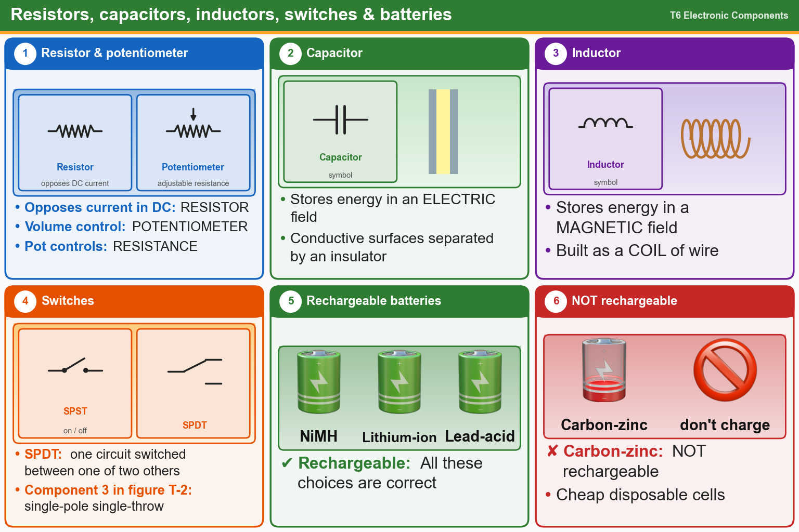

💡 Capacitor = electric field (plates plus insulator). Inductor = magnetic field (coil). Carbon-zinc is not rechargeable.
Tap an answer to check it.
T6A01
What electrical component opposes the flow of current in a DC circuit?
✘A.Inverter
✔B.Resistor
✘C.Transformer
✘D.Inductor
T6A02
What type of component is often used as an adjustable volume control?
✘A.Transformer
✔B.Potentiometer
✘C.Power resistor
✘D.Fixed resistor
T6A03
What electrical parameter is controlled by a potentiometer?
✘A.Capacitance
✘B.Field strength
✘C.Inductance
✔D.Resistance
T6A04
What electrical component stores energy in an electric field?
✘A.Resistor
✘B.Inductor
✘C.Diode
✔D.Capacitor
T6A05
What type of electrical component consists of conductive surfaces separated by an insulator?
✔A.Capacitor
✘B.Potentiometer
✘C.Resistor
✘D.Oscillator
T6A06
What type of electrical component stores energy in a magnetic field?
✘A.Capacitor
✘B.Resistor
✔C.Inductor
✘D.Diode
T6A07
What electrical component is typically constructed as a coil of wire?
✘A.Capacitor
✔B.Inductor
✘C.Diode
✘D.Transistor
T6A08
What is the function of an SPDT switch?
✘A.Two circuits are each switched between one of two other circuits
✘B.A single circuit is opened or closed
✘C.Two circuits are opened or closed
✔D.A single circuit is switched between one of two other circuits
T6A09
What type of switch is represented by component 3 in figure T-2?
✘A.Single-pole double-throw
✘B.Double-pole double-throw
✘C.Double-pole single-throw
✔D.Single-pole single-throw
T6A10
Which of the following battery chemistries is rechargeable?
✘A.Lithium-ion
✘B.Lead-acid
✘C.Nickel-metal hydride
✔D.All these choices are correct
T6A11
Which of the following battery chemistries is not rechargeable?
✘A.Lithium-ion
✔B.Carbon-zinc
✘C.Nickel-cadmium
✘D.Lead-acid